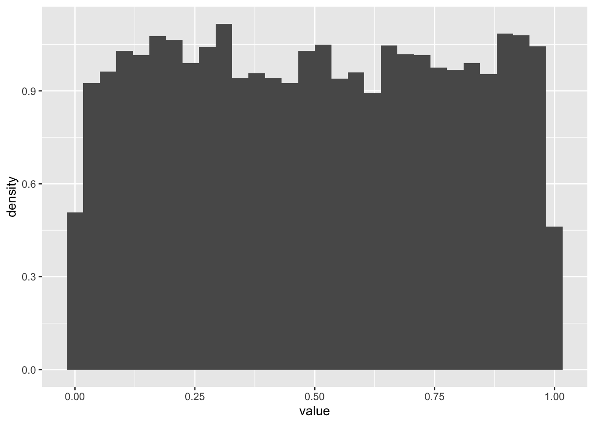
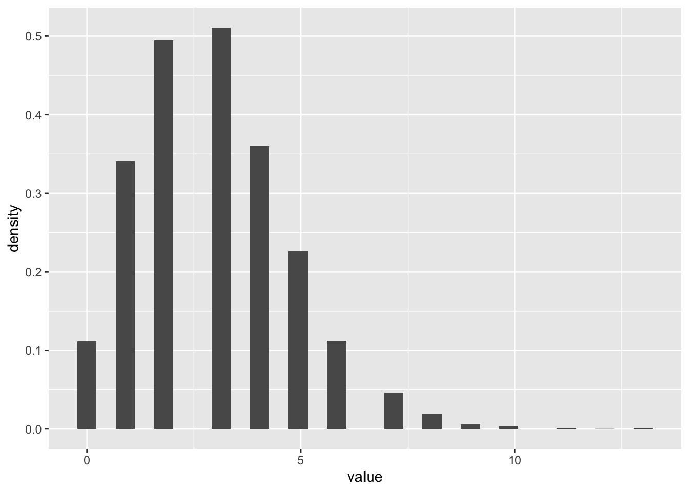
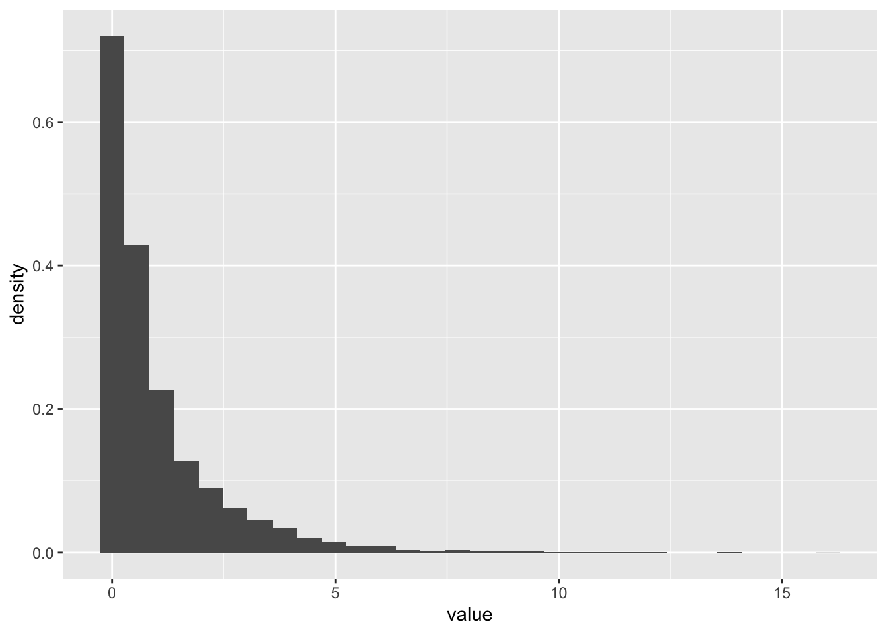
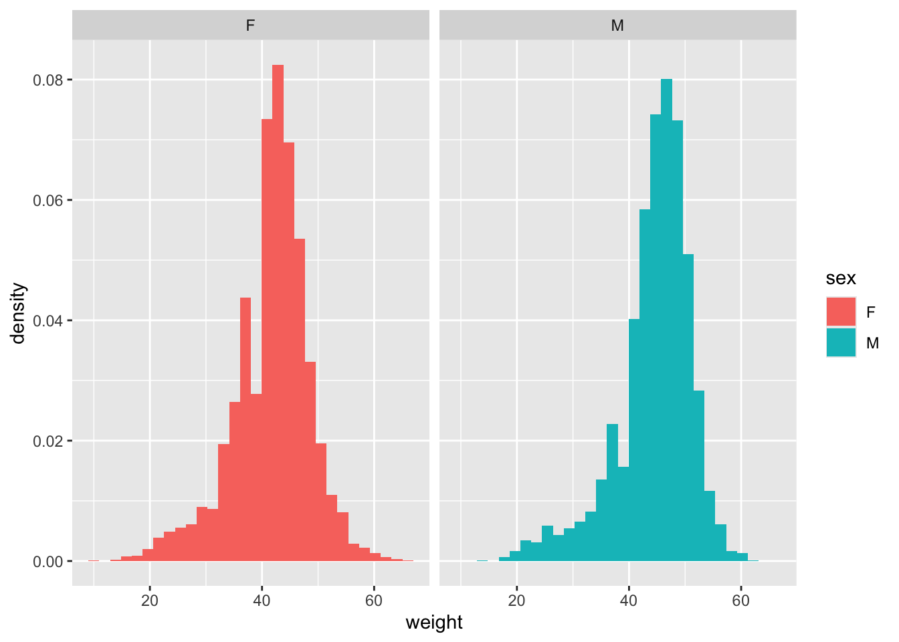
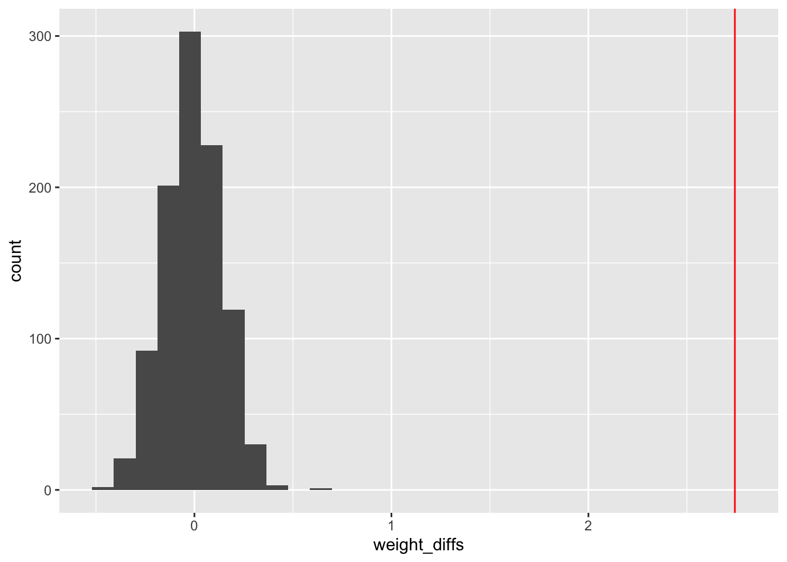

library(tidyverse)8 Probability, likelihood, and statistical inference
8.1 Lesson preamble
8.1.1 Learning Objectives
- Describe and sample from a variety of probability distributions commonly encountered in the sciences
- Use computational methods to test hypotheses about population parameters and processes that gave rise to observed data
- Understand the concept of permutation tests and compare to standard statistical tests
- Apply simple maximum likelihood estimation to real data
8.2 Common probability distributions
There are two major categories of random variables that have important differences in how they are treated in statistics:
8.2.1 Discrete random variables
.. can take on only a finite number of discrete values. The probability of any outcome \(X\) is described by the probability mass function:
\[\Pr(X=k) = p_k \hspace{12pt} (\text{e.g. } p_k = 1/6 \text{ for all } k \text{ when a die is fair})\]
where the sum of all outcomes must be 1: \[ \sum_{k=1}^n \Pr (k) =1 \]
Examples of discrete probability distributions include:
- The Poisson distribution. This distribution models the number of occurrences of a rare event. It has one parameter: the rate \(\lambda\) at which such events occur.
- The Binomial distribution. This distribution is associated to a random variable which counts the number of “successes” or “failures” in \(N\) trials, where the success probability is \(p\).
- The Hypergeometric distribution models the probability that, if we draw \(n\) objects from a population of size \(N\) where \(K\) of the objects have a specific attribute without replacement, that we see \(k\) objects in our sample with the attribute.
- The Geometric distribution. If we do many trials, each of which are independent and have probability of “success” \(p\), a random variable that has a \(\text{Geometric}(p)\) distribution counts the number of tries until a success occurs.
- The Negative binomial distribution models the number of trials until \(r\) successes occur, if the success probability in each trial is \(p\).
- The Multinomial distribution counts the number of events in each of \(K\) categories after \(N\) trials. It is a generalization of the binomial distribution to outcomes that can take on more than two values
Note: when \(N\), \(K\) are large relative to \(n\) and \(K/N\) is not too close to 0 or 1, the Binomial and Hypergeometric distributions are similar and its often advantageous to use the former (because it has a nicer probability distribution function, fewer parameters).
8.2.2 Continuous random variables
… can take on any infinite number of values within a range. The likelihood outcomes \(Y\) is described by the probability density function. Because \(Y\) can take on infinitely many values, the probability of an exact value is zero. Instead, the value of the probability density function at a particular \(y\) value \(f(y)\) can be used to understand the relative likelihood of on \(y\) value vs another, and the probability of observing \(Y\) within a range \(A\) is the integral of the probability density function over that range.
\[\Pr(a \leq Y \leq b) = \int_a^b f(y) \text{d} y.\]
Integrated over the entire range of possible \(Y\) values the probability density function is one
\[\int_{-\infty}^\infty f(y) \text{d} y = 1\]
Examples of continuous probability distributions include:
- The Uniform distribution models outcomes where all occur with equal probability.
- The Normal distribution is often used to model continuous observations that are sums of a large number of small, random contributions (e.g, individual alleles to a trait).
- The Log-normal distribution models continuous observations such that their natural logarithm follows a Normal distribution. In other words, if \(Y \sim \text{Lognormal}(\mu,\sigma^2)\), then \(\ln Y \sim \text{Normal}(\mu,\sigma^2)\) where \(\mu\) is the mean.
- The Exponential distribution models the time in-between events, if the events occur at rate \(\lambda\). What is means for events to occur at rate \(\lambda\) is that, over a small interval of time \(\Delta t\), an event occurs with probability approximately \(\lambda \Delta t\). The larger the \(\lambda\), the more frequently the event occurs…
- The Gamma distribution is commonly used to describe the waiting time to the \(r\)th event of a particular type. It is a flexible distribution which can be used in a number of contexts, especially when it is not clear what the right probabilistic model for observations may be. It is often used to model distributions that look approximately normal but are more right-skewed (long-tailed). In limiting cases, it approaches the normal distribution.
8.2.3 Challenge
For each of the distributions above, think of random variables (e.g., the number of brown bears with body sizes \(>\) 100 kg) with that distribution? Discuss with your neighbors.
8.2.4 Sampling random numbers
We can generate random numbers in R from all of these probability distributions, and more!
For example, to simulate a large realizations of a uniform random variable using runif().
N <- 10000
realizations_N_uniform <- runif(n = N, min = 0, max = 1)
data.frame(value = realizations_N_uniform) %>%
ggplot(aes(x = value)) +
geom_histogram(aes(y = after_stat(density)))`stat_bin()` using `bins = 30`. Pick better value `binwidth`.
We can evaluate the probability one realization arose from, say, the Uniform(0,100) distribution using dunif(). By evaluate, we mean return the probability density the observation would arise.1
dunif(realizations_N_uniform[1], min = 0, max = 100)[1] 0.01Now let’s try a Poisson distribution
N <- 10000
realizations_N_poisson <- rpois(n = N, lambda = 3)
data.frame(value = realizations_N_poisson) %>%
ggplot(aes(x = value)) +
geom_histogram(aes(y = after_stat(density)))`stat_bin()` using `bins = 30`. Pick better value `binwidth`.
8.2.5 Challenge
- Draw 10000 random numbers from the Gamma distribution with shape = 0.5 and scale =2
N <- 10000
realizations_N_gamma <- rgamma(n = N, shape = 1/2, scale = 2)
data.frame(value = realizations_N_gamma) %>%
ggplot(aes(x = value)) +
geom_histogram(aes(y = after_stat(density)))`stat_bin()` using `bins = 30`. Pick better value `binwidth`.
- Make a plot of the probability density function of a Gamma distribution shape = 0.5 and scale =2 using
dgamma. Add another curve with shape = 2 and scale = 1/2. (Hint: just like most R functions, ie log, sin, dgamma can take in vectors of x values and return vectors of probabilities)
x_vec <- seq(0,7,0.01)
gamma_vec1 <- dgamma(x = x_vec, shape = 1/2, scale = 2)
gamma_vec2 <- dgamma(x = x_vec, shape = 2, scale = 1/2)
gamma_data <- data.frame(x = x_vec, value = gamma_vec1, params = "1") %>%
rbind(data.frame(x = x_vec, value = gamma_vec2, params = "2"))
ggplot(gamma_data, aes(x = x, y = value, color = params)) +
geom_line() 
8.3 Maximum likelihood estimation and hypothesis testing with real data
One of the main goals of statistics is to determine what processes gave rise to the data we observe, or, to compare among candidate processes. This determination is done by first specifying candidate mathematical formula that describe the distribution of a variable (e.g., \(X \sim Binom(N, p)\)) or the relationships among the observed variables (e.g., \(Y \sim m X + b\)) . These formula typically involve unknown parameters, and part of the evaluation process is estimating the values of these parameters that best describe the data. Maximum likelihood estimation is is the foundation for most statistical procedures used in the sciences.
8.3.1 Review of the likelihood
The likelihood of observing any particular data point given a particular probability distribution (with parameters \(\theta\)) is just equal to the values of the probability distribution function at this \(X\) value, e.g., \(L(x|\theta) = f(x|\theta)\). When we have multiple data points that could inform our estimate, the likelihood becomes
\[L(x_1,\dots,x_n|\theta) = f(x_1|\theta) \cdots f(x_n|\theta) = \prod_{i=1}^n f(x_i|\theta),\]
which is formed under the assumption \(x_1,\dots,x_n\) are independent and using the basic laws of probability (which state that the joint probability of observing the two independent events A and B together is just equal to the product of their probabilities).
To determine what parameters were mostly likely to have given rise to the data under the assumption \(f\) models the data generating process, we find what value of \(\theta\) maximizes the likelihood.
The intuition for the method is quite simple: the value of a parameter (or, in the multi-parameter setting, the combination of values for the parameters) which gives rise to the highest probability of observing our data was most likely to have given rise to that data.
8.3.2 Case study 1: Maximum likelihood estimation with disease mortality data
Now we are going to test out applying this estimation technique to some real data! We’ll revisit the dataset from a a prior lecture - the Farrell & Davies 2019 dataset that measured cases and deaths for a set of infectious diseases that each infect a wide range of animal species.
Our goal will be to estimate, for the host species Sus scrofa (the wild boar) and parasite family Coronavirinae (which includes SARS-CoV-1 and -2), the probability that a case results in a death. We will group the data, regardless of the year, sampling location, etc.
disease_distance <- read_csv("data/disease_distance.csv")Rows: 4157 Columns: 24
── Column specification ────────────────────────────────────────────────────────
Delimiter: ","
chr (7): Country, Disease, Parasite, Host, HostOrder, ParaType, ParaFamily
dbl (17): Year, Cases, Deaths, Destroyed, Slaughtered, SR, EvoIso, Taxonomic...
ℹ Use `spec()` to retrieve the full column specification for this data.
ℹ Specify the column types or set `show_col_types = FALSE` to quiet this message.data <- disease_distance %>% filter(ParaFamily == "Coronavirinae" & Host == "Sus_scrofa")
data# A tibble: 14 × 24
Year Country Disease Parasite Host Cases Deaths Destroyed Slaughtered
<dbl> <chr> <chr> <chr> <chr> <dbl> <dbl> <dbl> <dbl>
1 2006 Cayman Islan… Transm… Alphaco… Sus_… 8 0 0 0
2 2006 Russian Fede… Transm… Alphaco… Sus_… 5763 570 0 0
3 2007 Cyprus Transm… Alphaco… Sus_… 10 0 0 0
4 2007 Russian Fede… Transm… Alphaco… Sus_… 673 585 0 0
5 2008 Mexico Transm… Alphaco… Sus_… 10 0 0 0
6 2008 Russian Fede… Transm… Alphaco… Sus_… 6 6 0 0
7 2009 Cyprus Transm… Alphaco… Sus_… 156 0 0 0
8 2009 Mexico Transm… Alphaco… Sus_… 5 0 0 0
9 2010 Cyprus Transm… Alphaco… Sus_… 1 0 0 0
10 2011 Belarus Transm… Alphaco… Sus_… 29 14 0 0
11 2011 French Polyn… Transm… Alphaco… Sus_… 738 547 0 0
12 2011 Germany Transm… Alphaco… Sus_… 5 0 0 0
13 2011 Mexico Transm… Alphaco… Sus_… 20 0 0 0
14 2011 Peru Transm… Alphaco… Sus_… 136 45 0 0
# ℹ 15 more variables: HostOrder <chr>, SR <dbl>, EvoIso <dbl>,
# Taxonomic_Range <dbl>, ParaType <chr>, ParaFamily <chr>, Vector <dbl>,
# EnviroRestingStage <dbl>, AvianReservoir <dbl>, Reproduction <dbl>,
# WOK_citations <dbl>, WOK_citations_noHuman <dbl>, latitude <dbl>,
# gdp <dbl>, gdp_pcap <dbl>8.3.2.1 Step 1: specify the likelihood (i.e., the distribution of the data)
What distribution makes sense to model the number of Sus scrofa deaths due to viruses in the family Coronavirinae? The Binomial! One can think of the number of (confirmed) cases of infection with a member of Coronavirinae as the “number of trials” and probability death as a “success probability” (\(p\)). Written out, \(\text{deaths}_{ij} \sim \text{Binomial}(\text{cases}_{ij}, p)\) for each country-year \(ij\). We’re assuming that for each country + year, the number of deaths out of all the cases is is an independent draw from a binomial distribution with the same parameter \(p\).
8.3.2.2 Step 2: evaluate the likelihood of individual observations
Since we will need to evaluate the probability of all observations in order to estimate \(p\), the first thing to figure out to evaluate likelihood when we have only one observation (i.e., the first row of the previous data frame). The below function evaluate the probability there are exactly \(d\) deaths when there are \(N\) cases and a probability \(p\) that a boar dies due to infection (somewhere, at some time) with a member of the Coronavirinae.
# let's figure out the likelihood of a single observation -- the first row
cases <- as.numeric(data[1,"Cases"])
deaths <- as.numeric(data[1,"Deaths"])
print(dbinom(x = deaths, size = cases, p = 0.1))[1] 0.4304672print(dbinom(x = deaths, size = cases, p = 0.5))[1] 0.00390625print(dbinom(x = deaths, size = cases, p = 0.9))[1] 1e-08Of these values of \(p\), which is most likely to explain the observation in the first row?
8.3.2.3 Step 3: evaluate the likelihood of all observations
To get a list of the likelihood at each observed combination of cases and deaths, we use the fact that dbinom can take vectors of parameters as inputs and return a vector of probabilities for reach corresponding element of the vectors
dbinom(x = data$Deaths, size = data$Cases, p = 0.1) [1] 4.304672e-01 1.693764e-02 3.486784e-01 0.000000e+00 3.486784e-01
[6] 1.000000e-06 7.274974e-08 5.904900e-01 9.000000e-01 1.596866e-07
[11] 0.000000e+00 5.904900e-01 1.215767e-01 1.551125e-138.3.2.4 Step 4: put the (log-)likelihoods together!
We use the prod function to take the product of all the values in the vector of probabilities:
prod(dbinom(x = data$Deaths, size = data$Cases, p = 0.2))[1] 0Uh oh! How can the probability of our data be zero when the probability of death in a case is 20%? Glancing at the data, it makes sense this could be an unlikely value, but it shouldn’t be zero.
Unfortunately, numerical problems can arise when you take products of very small numbers (because there is a limit to how small of a number a computer can store in the regular format). For this reason, we often take the logarithm of the likelihood instead. Remember that the log of a value between zero and 1 will be a negative but large number. And, remember that the product of individual likelihoods (for each observation) = the sum of log-likelihoods
sum(log(dbinom(x = data$Deaths, size = data$Cases, p = 0.2)))[1] -1502.6248.3.2.5 Step 5: identify the value of the parameter(s) most likely to explain the data
So far, we have only evaluated the log-likelihood (of one and all of observations) at specific values of the parameter of interest, \(p\). To identify what value of \(p\) is most likely to explain the data, we need to evaluate the log-likelihood across a RANGE of \(p\) values and identify when the function is maximized.
We can do this in a couple ways, but here is how using a for loop:
p_values_to_test <- seq(0, 1, by = 0.001)
LogLik <- rep(0, length(p_values_to_test))
index <- 1
for (p in p_values_to_test){
LogLik[index] <- sum(log(dbinom(x = data$Deaths, size = data$Cases, p = p)))
index <- index + 1
}
LogLik <- data.frame(LogLik, p = p_values_to_test)
LogLik %>% ggplot(aes(x = p, y = LogLik)) + geom_line()
Values of \(p\) where \(\ln L(p) - -\infty\) are very unlikely to explain the data. Since we are interested in the value of \(p\) which gives rise to the largest \(\ln L\), and these values are infinitely negative, they are not candidates for our estimator of \(p\). As a result, they are suppressed in the plot.
Another thing to notice is the curvature of the likelihood function around the value where it assumes a maximum. This tells us something about how confident we should be about our “best guess” for the parameter, or the maximum likelihood estimate of that parameter. More on this later …
estimate_p <- LogLik[LogLik$LogLik == max(LogLik$LogLik),"p"]
estimate_p[1] 0.2348.3.3 Case study 2: Comparing sex differences with permutations tests
In this example we are going to revisit a classic inference task that you have certainly seen in your introductory stats classes: asking if there is a significant difference between the mean of two populations. We’ll revisit our dataset from the Portal study (Lectures 3-5). We’re going to look for evidence of sex differences in weight. This study is useful because it measures the individual weights of every animals sampled.
#surveys <- readr::read_csv("https://ndownloader.figshare.com/files/2292169")
surveys <- readr::read_csv('data/portal_data.csv')Rows: 34786 Columns: 13
── Column specification ────────────────────────────────────────────────────────
Delimiter: ","
chr (6): species_id, sex, genus, species, taxa, plot_type
dbl (7): record_id, month, day, year, plot_id, hindfoot_length, weight
ℹ Use `spec()` to retrieve the full column specification for this data.
ℹ Specify the column types or set `show_col_types = FALSE` to quiet this message.Let’s look at which species might be a good candidate to choose for this analysis. We’ll start by filtering by species (keeping Genus information too), which suggests Dipodomys merriami (kangaroo rat) is most frequently observed
surveys %>% group_by(genus, species) %>% tally() %>% arrange(desc(n))# A tibble: 48 × 3
# Groups: genus [26]
genus species n
<chr> <chr> <int>
1 Dipodomys merriami 10596
2 Chaetodipus penicillatus 3123
3 Dipodomys ordii 3027
4 Chaetodipus baileyi 2891
5 Reithrodontomys megalotis 2609
6 Dipodomys spectabilis 2504
7 Onychomys torridus 2249
8 Perognathus flavus 1597
9 Peromyscus eremicus 1299
10 Neotoma albigula 1252
# ℹ 38 more rowsAnd we can see at least some evidence of difference in weigh by sex here
surveys %>% group_by(genus, species, sex) %>%
filter(!is.na(sex) & !is.na(weight)) %>% # remove rows with NA in either
mutate(n_tot_species_sex=n()) %>% # new column containing total observations per species
filter(n_tot_species_sex>50) %>%
group_by(genus, species, sex) %>%
summarize(mean_weight = mean(weight), na.rm = TRUE)`summarise()` has grouped output by 'genus', 'species'. You can override using
the `.groups` argument.# A tibble: 27 × 5
# Groups: genus, species [14]
genus species sex mean_weight na.rm
<chr> <chr> <chr> <dbl> <lgl>
1 Chaetodipus baileyi F 30.2 TRUE
2 Chaetodipus baileyi M 33.8 TRUE
3 Chaetodipus penicillatus F 17.2 TRUE
4 Chaetodipus penicillatus M 17.2 TRUE
5 Dipodomys merriami F 41.6 TRUE
6 Dipodomys merriami M 44.4 TRUE
7 Dipodomys ordii F 48.5 TRUE
8 Dipodomys ordii M 49.1 TRUE
9 Dipodomys spectabilis F 118. TRUE
10 Dipodomys spectabilis M 122. TRUE
# ℹ 17 more rowsLet’s plot this!
surveys_kr <- surveys %>%
filter(genus == "Dipodomys", species == "merriami") %>%
filter(!is.na(sex) & !is.na(weight)) # remove rows with NA in either
surveys_kr %>% ggplot(aes(x=weight, fill = sex, y = after_stat(density))) +
geom_histogram() +
facet_grid(~sex)`stat_bin()` using `bins = 30`. Pick better value `binwidth`.
dim(surveys_kr)[1] 10248 13And take a look at the difference in average weight by sex
surveys_kr %>% group_by(sex) %>%
summarize(mean_weight = mean(weight), n = n())# A tibble: 2 × 3
sex mean_weight n
<chr> <dbl> <int>
1 F 41.6 4440
2 M 44.4 5808weight_diff <- mean(surveys_kr[surveys_kr$sex == "M",]$weight) - mean(surveys_kr[surveys_kr$sex == "F",]$weight)
weight_diff[1] 2.743449Now we want to understand - is this difference more that we would expect by chance?
We can use the popular Student’s t-test that is a favourite of statistics 101 classes everywhere to test this:
t.test(weight ~ sex, data = surveys_kr)
Welch Two Sample t-test
data: weight by sex
t = -20.539, df = 9478.7, p-value < 2.2e-16
alternative hypothesis: true difference in means between group F and group M is not equal to 0
95 percent confidence interval:
-3.005279 -2.481619
sample estimates:
mean in group F mean in group M
41.60968 44.35313 However, there is another way we can do this, without having to remember anything about t-tests! Another way of thinking about what it means to test for a significant differences in weight by sex is to say we are testing the null hypothesis that weight is the same by sex. Under that hypothesis, if we shuffled the sex labels on each animal, the distribution of weights should roughly be the same. We want to see if our data is consistent with what we’d expect if the sex labels were shuffled. We might not see NO difference - some differences between groups can arise by chance when we have small samples sizes. But, we can simulate this null hypothesis many times to understand how much sex difference we expect to see just do to chance, and then compare it to what we actually see in our data.
This procedure is an example of a permutation test, which is a very powerful tool in statistics and increasingly used now that computers can very quickly simulate this sort of res-sampled data. The procedure we follow below is:
Take the entire list of measured weights, and randomly shuffle their order
Assign the first half of the measurements (roughly 5000/10000) to be male), and the second half to be female
Re-calculate the difference in weights between male and female in this simulated data
Repeat this many times (1000 here), recording the weight differences calculated each time
Examine the distribution of weight differences from this simulated, permuted data. This represents the expected weight difference by sex under the null hypothesis of no difference.
See where in this distribution our observed weight difference falls. Calculate what % of the null distribution is more extreme than our observed value (e.g., 2*(1-quantile(observed, simulated)). This is the p value for our hypothesis test
N_samples <- 1000
test_weight_diff_samples <- rep(0,N_samples)
for (i in 1:N_samples){
test_sample <- sample(x = surveys_kr$weight)
test_sample_male <- test_sample[1:5000]
test_sample_female <- test_sample[5000:10000]
test_weight_diff <- mean(test_sample_male) - mean(test_sample_female)
test_weight_diff_samples[i] <- test_weight_diff
}ggplot(data = data.frame(weight_diffs = test_weight_diff_samples), aes(x = weight_diffs)) + geom_histogram() +
geom_vline(xintercept = weight_diff, color = "red")`stat_bin()` using `bins = 30`. Pick better value `binwidth`.
sum(test_weight_diff_samples > weight_diff)/N_samples[1] 0#max p value 1/N_samples = 0.001A technical and somewhat confusing thing about probability: if a continuous random variable assumes the value \(x\), the probability density function at \(x\) can assume a value greater than 1, but the probability of drawing \(x\) exactly is zero. This means, if you throws a dart at a board, the probability it lands at a particular point is zero — even though the probability density associated to this experiment would likely assume a value \(>0\). While this seems strange, and it is, there is a simple way to understand what’s going on. The density must be integrated over a small region around the outcome to get an honest-to-god probability. In other words, the probability of getting \(x\) exactly is zero, but the probability of getting a value from \(x-\delta\) to \(x+\delta\) is the integral of the probability density over this region.↩︎